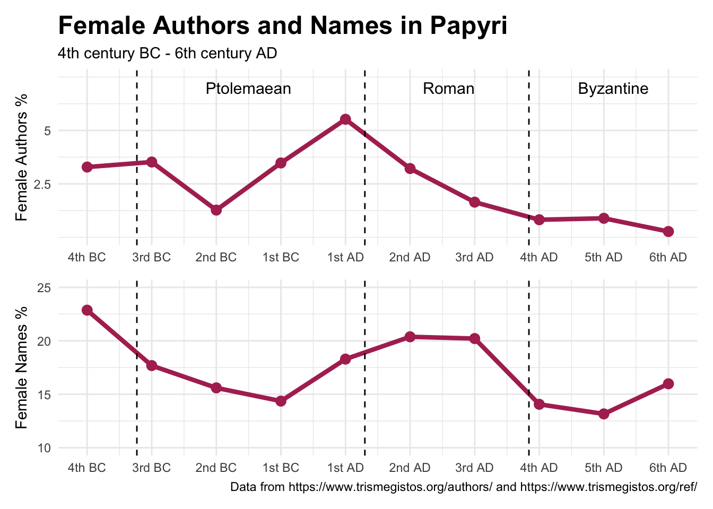
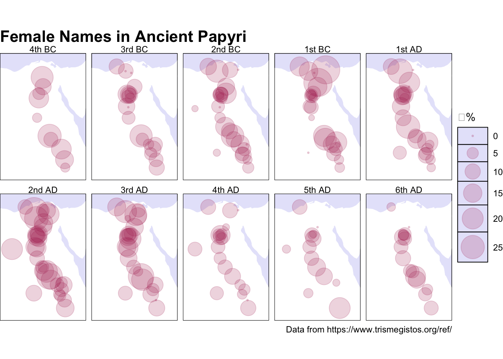

Appendix A — Women in Ancient Papyri
Female voice and presence in written text through the centuries
An important source for the private lives of women in many aspects are papyri. Unlike manuscripts, their content is written in the time itself and not only very popular or important literary works and texts are preserved. Papyri from Egypt consist mostly out of documentary texts and personal letters. This is why it is a good source for the private daily life for middle to upper class citizens. Papyri teach us things about the relation was between certain family members, how people spend their time, societal norms et cetera. However, here too women seem to be underrepresented in two ways. It is still more obscure to us how women spend their time, what their role was in society and what they think. Most documents and letters are written by men about other men. I will try to illustrate this point with some visualisations. At the same time I am going to map how the representation of women changes over time and how it varies in different regions. I want to analyse if there are certain timeframes or regions where women did have more of a voice and were talked about more.
About the Data
I will be talking about women visibility in this time period based on data from Trismegistos. It is a website that has data on thousands of papyri. For the women names data I have used their page (https://www.trismegistos.org/ref/) with tables on the people mentioned in papyrological material where it shows how many male, female, unisex, unknown and total names have been found in papyri per selected century. Here you can also filter how many female, male and total names have been found in a certain region. Unfortunately this did not include coordinates, so I had to look this up myself per region (I got most from the Trismegistos geo data and some from Pleiades). I have included the central coordinates over a longer period, but this variates a little over time for some regions, so it is possibly not representative for each century.
The writer data is found on another page on the website (https://www.trismegistos.org/authors/). Here again it shows per selected century the number of women, men and total writers. So that is the information that I copied and used for the visualisations.
Time perspective
As I only had easy access to the data per century, it is not possible to say anything about specific events that could have caused peaks or dips in female visibility in written sources, so I have decided to look at the data over the three main periods between 400 BC and 600 AD: The Ptolemaic period (332 – 30 BC), the Roman period (30 BC – 284 AD) and the Byzantine period (284 to 640 AD).
The overall low percentages show that women were especially limited to actively spread their own opinion and voice through writing. The reason for this was probably because it was more common for men to know how to write and women were discouraged from participating in activities that required writing. Both lines start with a downward trend in the Ptolemaic period that about halfway start to go upwards. It is possible that positive social-cultural influences and an increase of wealth encouraged women to be active as writers and encouraged people to include more involvement of women in other social matters. It is possible that Egypt was influenced by more inclusive societal norms when they had more communication with the Romans. After a while both categories go downwards again. This can be linked to political and economic decline and uncertainty, which gave less room to individuality, social inclusivity and intellectual development for women.
In the following visualisation I have incorporated some spatial elements to see how the proportion of female names differs in various regions of Egypt.

While it is harder to see in which century the overall proportion is the highest, it is easier to see how the proportion of female names in papyri change in different parts of Egypt. Disappointingly it does not seem to change too much. Regions that have smaller circles in a century with a lower proportion, seem to increase with a higher proportion, but still stay on the smaller side, as do the bigger circles.
Regional perspective
Now let us move on to a fully regional view of female visibility. First I wanted to show the skewed proportion of attestated male and female names.
The interactive map gives the ability to look at individual places that seem to either have a higher or lower female proportion than average. At the same time, by including the actual numbers instead of a percentage, it is possible to see which regions have more texts and are thus more statistical weight.
Conclusion
Papyri have proven to be an invaluable lens into the daily lives, family dynamics and societal roles of women in ancient Egypt. These visualisations have shown some light on the written presence of women in ancient Egypt during the Ptolemaic, Roman and Byzantine periods. I have tried to explain on a superficial level how the complex relationship between politic, culture and economy can explain some anomalous visual results. However most factors I have named as possible explanations for changes or differences are speculations and need more research and deeper historical analyses to confirm them. The most important thing I have tried to show is how time and region can have an influence on the presence women have and what remains of them compared to men after a few thousand years. Unfortunately the patriarchal ancient society has made the women voice mostly lost to us. It underscores the importance of trying to find out more about women’s personal lives and thoughts to get a more inclusive image of this time.
Sources
Report
- Pestman. New Papyrological Primer. BRILL, 1994.
- Vliet, Joep van der, Brian Paul Muhs, and A. Egberts, eds. Perspectives on Panopolis: An Egyptian Town from Alexander the Great to the Arab Conquest. Leiden, Netherlands: Brill, 2002.
Data
Coordinates
Help with coding (where specified)